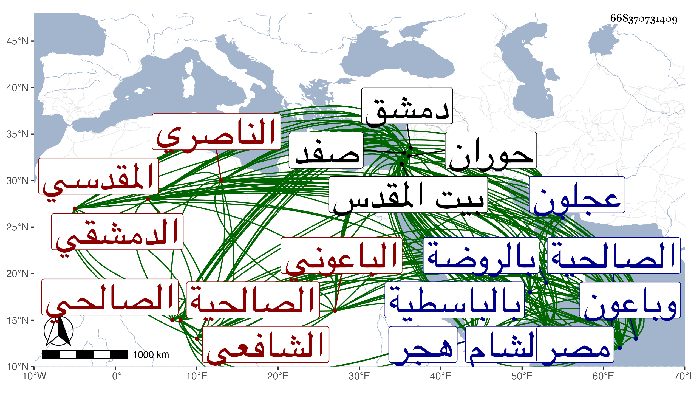

0902Sakhawi.DawLamic.ITO20230111-ara1.EIS1600.668370731409
Biography ID: 668370731409
إبراهيم بن أحمد بن ناصر بن خليفة بن فرح بن عبد الله بن يحيى بن عبد الرحمن البرهان أبو إسحاق بن الشهاب أبي العباس المقدسي الناصري الباعوني الدمشقي الصالحي الشافعي الآتي أبوه واخوته في محالهم ويعرف كسلفه بالباعوني وناصرة قرية من عمل صفد وباعون قرية صغيرة من قرى حوران بالقرب من عجلون ولد كما أخبرني به في ليلة الجمعة سابع عشري رمضان سنة سبع وسبعين وسبعمائة بصفد وبه جزم ابن قاضي شهبة وقيل في التي قبلها بصفد ونشأ بها فحفظ القرآن وتلاه تجويدا على الشهاب أحمد بن حسن الفرعني إمام جامعها وحفظ بعض المنهاج ثم انتقل منها قريبا من سن البلوغ مع أبيه إلى الشام فأخذ الفقه بها عن الشرف الغزي وغيره ولازم النور الابياري حتى حمل عنه علوم الآداب وغيرها ودخل مصر أظنه قريبا من سنة أربع وثمانمائة فأخذ عن السراج البلقيني ولازمه سنة وأخذ عن الكمال الدميري شيئا من مصنفاته ولازمه وسمع إذ ذاك على العراقي والهيثمي وتردد بها إلى غير واحد من شيوخها وعلمائها ثم عاد إلى بلده فأقام بها على أحسن حال وأجمل طريقة . وسمع على أبيه والجمال بن الشرائحي والتقى صالح بن خليل بن سالم وعائشة ابنة ابن عبد الهادي والشمس أبي عبد الله محمد بن محمد بن محمد بن علي بن أحمد بن خطاب بن اليسر المؤذن بالأقصى وباشر نيابة الحكم عن أبيه والخطابة بجامع بني أمية ومشيخة الشيوخ بالسميساطية ونظر الحرمين برغبة أبيه له عنها في سنة اثنتي عشرة فباشر ذلك أحسن مباشرة ثم صرف وجهز اليه التوقيع بالقضاء حين استقرار الكمال بن البارزي في كتابة سر الديار المصرية فامتنع وصمم وراجعه النائب وغيره من أعيان الأمراء والرؤساء وغيرهم فما أذعن وتكرر خطبه لذلك مرة بعد أخرى وهو يأبى إلى أن قيل له فعين لنا من يصلح فعين أخاه وولي الخطابة غير مرة وكذا باشر قبل ذلك خطابة بيت المقدس ثم مشيخة الخانقاه الباسطية عند الجسر الأبيض من صالحية دمشق وحكى لي في ذلك غريبا وهو أنه دخل على واقفها في قدمة قدمها قبل ظهور تقريره إياها مدرسة للتهنئة بقدومه فأعجبته وقال في نفسه أنه لا يتهيأ له سكنى مثلها إلا في الجنة فلما انفصل من السلام عليه لم يصل إلى بابها إلا وبعض جماعة القاضي قد تبعه فأخبره أن القاضي تحدث وهو في الطريق بعملها مدرسة وقرره في مشيختها وحمدت سيرته في مباشراته كلها خصوصا في مال الحرمين بحيث امتنع من قبول رسالة مصادمة للحق ولو جل مرسلها . وأختصر الصحاح للجوهري اختصارا حسنا وجمع ديوان خطب من إنشائه وديوان شعر من نظمه وضمن الفية ابن مالك قصيدة امتدح بها النجم ابن حجي وله الغيث الهاتن في وصف العذار الفاتن أتى فيه بمقاطيع رائقة ومعان فائقة اشتمل على نحو مائة وخمسين مقطوعا أودع كلا منها معنى غريبا غير الآخر مع كثرة ما قال الناس في ذلك مما هو دال عل سعة نظره وحسن فكره وأنشأ رسالة عاطلة من النقط من عجائب الوضع في السلاسة والانسجام وعدم الحشو والتكلف سمعها منه شيخي وذكره في معجمه وهو خاتمة من فيه موتا وغيره من الأئمة وأثنوا على فضائله وجميل خصائله واشتهر ذكره وبعد صيته وعمر حتى أخذ عنه الفضلاء طبقة بعد طبقة وصار شيخ الأدب بالبلاد الشامية بغير مدافع ولهم بوجوده الجمال والفخر قال ابن قاضي شهبة اضافنا بمنزله في الصالحية صحبة النجم بن حجي وقرأ علينا تضمينه لألفية ابن مالك في مدح النجم كما فعل ابن نبانة بالملحة في مدح السبكي فأجاد كل الاجادة على أن بين الألفية والملحة البون الكثير فتضمين الألفية أشد ولكنه ممن ألين له الكلام . وذكره المقريزي في تاريخه وقال انه مميز في عدة فنون سيما الأدب فله النظم الجيد قال وتردد إلى مع والده ترددا كثيرا . وأورد ابن خطيب الناصرية في تاريخه من نظمه ووصفه بالشيخ الامام العامل الفاضل البليغ انتهى . وقد لفيته بدمشق وقرأت عليه بباسطيتها أشياء وسمعت من نظمه ونثره مالا أحصيه وعندي منهما الكثير وأوردت في معجمي منه جملة وابتهج بقدومي عليه وبالغ في الثناء والذكر الجميل وكان جميل الهيئة منور الشيبة طوالا مهابا ذا فصاحة وطلاقة وحشمة ورياسة ومكارم وتواضع وتودد وعدم تدنس بما يحط من مقداره واقتدار على النظم والنثر بحيث كتب بخطه الحسن من انشائه ما لا يحصى كثرة وكان يحكى أن الزين عبد الباسط قال له ان مراسلاتك المسجعة إلينا تبلغ أربع مجلدات فكيف بغيرها . وقد ترجمه بعض المتأخرين بالشيخ الامام العلامة خطيب الخطباء شيخ الشيوخ لسان العرب ترجمان الأدب برهان النظر فريد العصر انسان عين الدهر برع في فن الانشاء وصناعة الأدب والترسل والنظم والنثر بحيث انه لم يكن في زمنه من يدانيه في ذلك وكتب هو لمن سأله في ترجمته وترجمة أبيه بعد أن أجاب انا في ذلك كجالب التمر إلى هجر والمتفاصح على أهل الوبر . وهو ممن ذكره المقريزي في العقود باختصار جدا وانه اجتمع به مع والده بدمشق مرارا قال ونعم الرجل هو . مات في يوم الخميس رابع عشري ربيع الأول سنة سبعين بمنزله بالباسطية وصلى عليه من يومه بالجامع المظفري تقدم في الصلاة عليه أخوه الشمس محمد الآتي ودفن بالروضة من سفح قاسيون بوصية منه وكانت جنازته حافلة حضرها النائب فمن دونه من الأمراء والأعيان وجاء الخبر بذلك إلى الديار المصرية فصلي عليه صلاة الغائب بالجامع الأزهر رحمه الله وإيانا . ومما كتبته عنه قوله :
| سل الله ربك ما عنده | ولا تسأل الناس ما عندهم |
| ولا تبتغي من سواه الغنى | وكن عبده لا تكن عبدهم |
وقوله :
| إذا استغنى بنو الدنيا بمال | لهم جم فكن بالله أغنى |
| وإن مالوا إلى الإكثار فاقنع | فإن القنع كنز ليس يفنى |
وقوله :
| سئمت من الدنيا وصحبة أهلها | وأصبحت مرتاحا إلى نقلتي منها |
| ووالله ما آسي عليها وانني | وإن رغبت في صحبتي راغب عنها |
| فما زالت الاكدار محفوفة بها | وما زال عنها دائما ذو النهي ينهى |
وقوله :
| إذا استغنى الصديق وصا | ر ذا وصل وذا قطع |
| ولم يبد احتفالا بي | ولم يحرص على نفعي |
| فأنا عنه واستغني | بجاه الصبر والقنع |
| وأحسب انه ما مر | في الدنيا على سمعي |
وقوله مما كتب به في الصغر على سماط الشهاب بن الهائم في النحو :
| لفتى الهائم فهم | قد محا الاشكال محوا |
| مد بالقدس سماطا | أشبع الطلاب نحوا |
ومنه :
| أشكو إلى الباري اناسا قد غدت | ملأى بأنواع المخازي دورهم |
| تغلي على صدورهم غيظا كما | تغلي على الجمر الكثيف قدورهم |
| هم يعلنون لدى التقاء مودتي | والله يعلم ما تكن صدورهم |
ومنه :
| أشد الناس في الدنيا عناءا | كريم مجده مجد اثيل |
| يحب مكارم الأخلاق مثلي | وليس له إلى الدنيا سبيل |
ومنه في شروط الوضوء :
| احفظ شروطا للوضوء نظمتها | فيحفظها يعني الفقيه البارع |
| تمييز اسلام وماء مطلق | والعلم بالاطلاق شرط رابع |
| ثم النقا عن حيضها ونفاسها | وتيقن الحدث اشترط والسابع |
| ان يمكن استعماله لا عائق | عنه وان لا يعتريه مانع |
| ولدائم الحدث اشترط من بعد ذا | أيضا دخول الوقت وهو التاسع |
